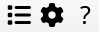
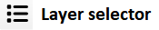
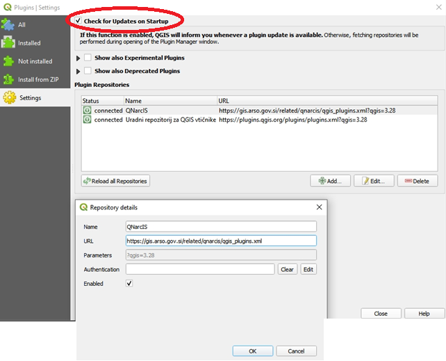
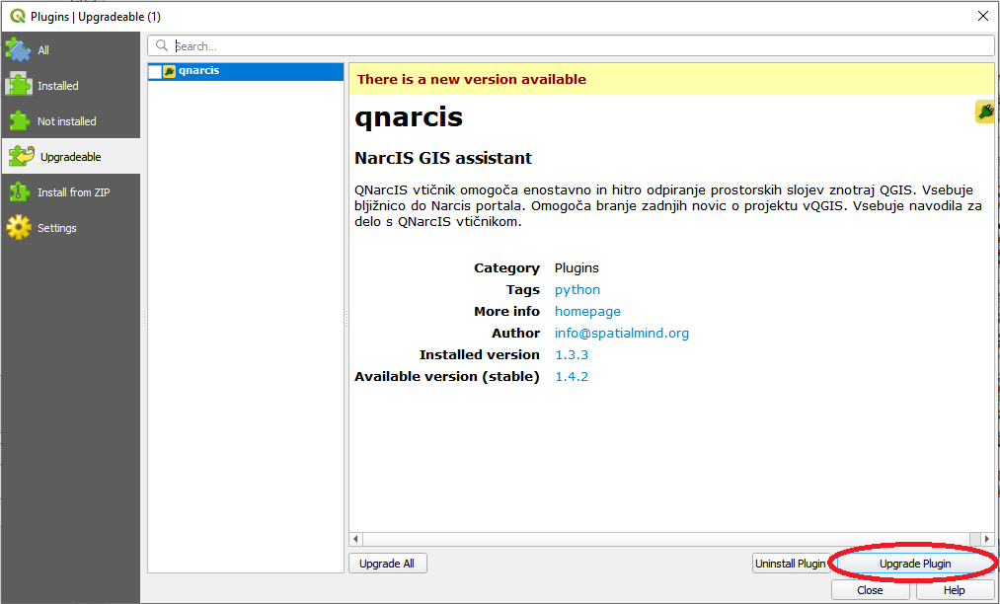
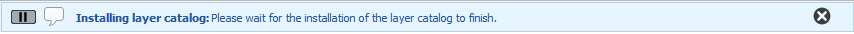
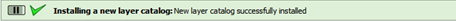

The QNarcIS plugin, developed as part of the LIFE NarcIS project, enables users to work more effectively with data in the QGIS program. Users can easily access a variety of layers necessary for efficient nature conservation and other tasks in one place. It allows for simple and quick opening of spatial layers within the QGIS program. In addition to viewing data, more advanced spatial analyses, data queries, and custom map creation can be performed in one place.
The QNarcIS plugin includes a Layer Selector tool that allows selection of only the desired layers from the entire set.

The custom toolbar of the plugin includes the Layer Selector tool, Settings, and Help.

The Layer Selector tool allows users to select only the desired layers from the entire set of layers in the QNarcIS plugin. Users can easily include only those layers needed for task completion.
When the Layer Selector tool is selected, a new window opens with a list of all available layers for use. By double-clicking on a selected layer, it opens in the QGIS project in the "Layers" panel. Accessible layers in the Layer Selector are colored green, while currently inaccessible ones are colored red. The pre-set hierarchical structure from the Layer Selector is transferred to the "Layers" panel for the selected layers.
The Layer Selector includes fields for Layer Name, Service Type, Service Source, and Display at Scale. It also contains a quick search feature to make it easier to select the desired layers.
All layers in the plugin are prepared with public web services, ensuring portability. The Service Type field defines the type of data (WMS, WFS…). The Service Source field informs which organization is responsible for servicing the individual layer in the plugin. The service source is not necessarily the same as the layer owner organization. The Display at Scale field provides information on what view (scale) the layer will be drawn (visible). The quick search in the hierarchical tree displays all layers whose structural precursor contain the searched word when filtering. Searching is done by entering the query in the "Search the catalog..." field.
All layers contain appropriate symbology, some have visible labels, and certain layers have defined display scales as needed.
All layers can be freely moved within the "Layers" panel in your QGIS project, with changes in symbology, view constraints, and other settings possible.
The QGIS project can be saved and shared. Upon reopening the saved project, all previously selected layers from the Layer Selector will already be automatically present.
For automatic updates of the QNarcIS plugin, users must ensure that automatic plugin updates are enabled in the QGIS program. In the QGIS toolbar, select "Plugins" and then "Manage and Install Plugins...". The user selects "Settings" and ensures that the "Check for Updates on Startup" option is checked at the top of the tab.

When the QNarcIS plugin is available for an upgrad, the system in the QGIS program notifies the user that a new update is available. The user selects the upgrade.
Users can also manually select the upgrade in the QGIS program in the "Plugins" menu by selecting "Upgradable", then the "qnarcis" plugin, and clicking "Upgrade Plugin".

After installing the plugin update, a restart of the QGIS program is required to complete the update of the QNarcIS plugin.
With each plugin update, the layer catalog is also automatically upgraded. Independently of the plugin updates, the QGIS program checks for a newer version of the layer catalog each time it starts and installs it if available.
Upon the first startup of the QGIS program after the layer catalog update (new layers, changed structure), the changes are automatically installed, and the system notifies the user with a message: "Installing layer catalog: Please wait for the installation of the layer catalog to finish."

Users have to wait a few moments for all changes to be installed. The system will notify "Installing a new layer catalog: New layer catalog successfully installed"

After installing the layer catalog update, a restart of the QGIS program is required to complete the update of the layer catalog.
Upgrading the plugin is not necessary when only content changes are made.
Settings allow users to select the country of the QNarcIS plugin and set the default layer on QGIS startup.
The plugin is portable abroad, so in addition to the plugin for Slovenia (SI), it is currently possible to select the plugin for Kosovo (XK). The default country setting is Slovenia.
In the settings, you can set the default layer on QGIS startup. The default layer for Kosovo plugin startup is "OpenStreetMap". The selection can be changed to any other available layer in the plugin, or the default layer display can be turned off.
Help provides more information about the plugin's operation, existing tools, functionalities, and more.
Users can send suggestions and feedback for improving the QNarcIS plugin via email to: narcis.arso@gov.si